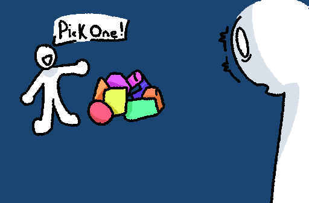

When Algorithms Fail
I originally had this long contrived blogpost all written up about social media and how to systematically get famous on it, however I feel like there's a better discussion to be had about social media-- Algorithms, and how they have failed us. But to describe how they failed us, we have to first discuss their intended goal, and the problems they were originally supposed to fix.
Choice Paralysis
You ever wanted to watch a movie with a friend, family, or significant other, unknowing what you wanted? Surprisingly, this is a common thing. Its called Choice Paralysis.
Its a major problem, and people get overwhelmed really quickly if they are shown too many options too quickly, or no options at all.
